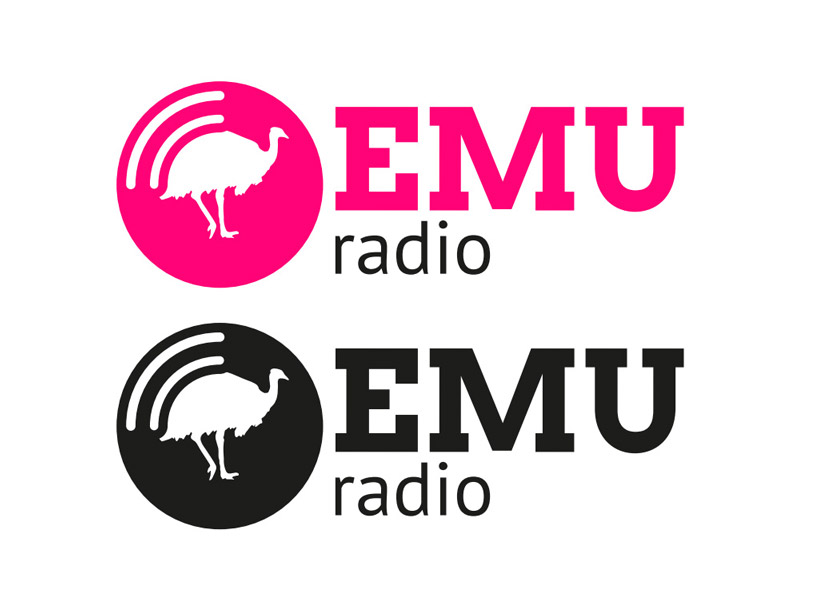
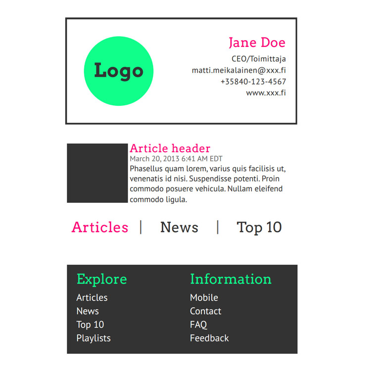
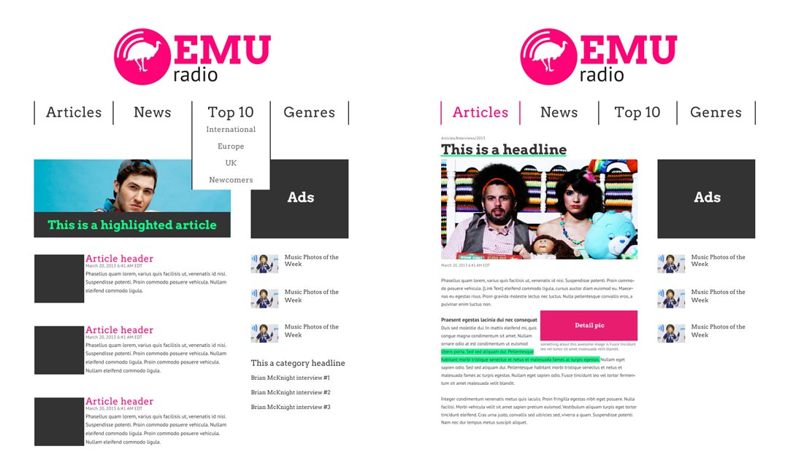

EMU Radio
PDF (1.5MB, Finnish)Brand identity guide for and imaginary radiostation that's targeting the young indie-music audience.
The guide was created as coursework during a graphic design course. The tasks were to create a brand identity piece by piece for an imaginary or real tv/radiostation, including a website.
The target audience is goes to festivals and listens mainly to inde/electronic music, so design aims to reflect those musical styles and feelings. Some other important values are naturalness, exuberance and boldness.
I do not own the rights to parts of the imagery and they are used only in demonstrative purposes.


